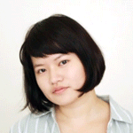
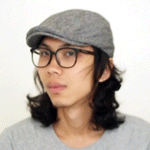

反覆分心Placebo Studio，將視覺影像與文字結合，加上一點玩心，為品牌著上最合適的衣裝。

辛怡澄 Shandi Hsin
採訪編輯／文案企劃／活動企劃／策展／品牌操作
-
來自台灣台南，現居台北，為獨立藝文工作者。
倫敦大學金匠學院（Goldsmiths, University of London）創意文化媒體碩士畢業，曾於台北當代藝術館（Museum of Contemporary Art, Taipei）、今周刊、CNEX視納華仁紀錄片基金會、金馬國際影展、台北電影節、光點台北等藝文單位任職，對藝文與媒體產業有豐富的工作經驗及深入的了解。曾擔任【妳的世代．我們的未來－與小英姐姐面對面論壇】、【假如我是總統 換位思考】小英總統與高中生面對面論壇等多項大型活動之專案統籌（Project Manager）。
 hycgiggle@gmail.com
hycgiggle@gmail.com

劉知潔 JJ Liou
形象識別／活動視覺／專輯包裝／書籍裝幀／網站設計／包裝設計／攝影
-
來自台灣彰化，現居台北，為獨立設計師。
曾獲得台灣政府補助的全額獎學金，於 2012 年至 2013 年間前往藝術中心設計學院（Art Center College of Design）攻讀平面設計（Graphic Design），並取得紐約 Johnson and Johnson 全球設計中心有薪實習，主要負責 Band-Aid 和 Listerine 的包裝設計。回國後，自台灣科技大學工商業設計研究所碩士畢業，其後服役於替代役公益大使團，擔任平面設計。2015 年起至2017年間加入新創團隊 KumaWash 為該品牌之設計師。現為自由設計師。 設計相關經驗豐富，涵蓋多方領域，如企業形象識別系統、包裝、網頁、和出版品設計，獲數個國際競賽獎項肯定，包含紅點傳達設計奬、ADAA Award、仁川國際設計獎等。作品也曾在台北世界設計博覽會、台灣設計師週等展覽展出。
